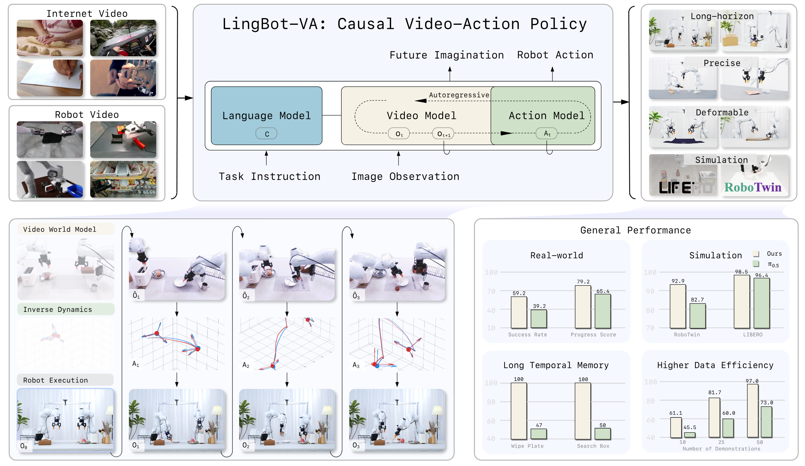
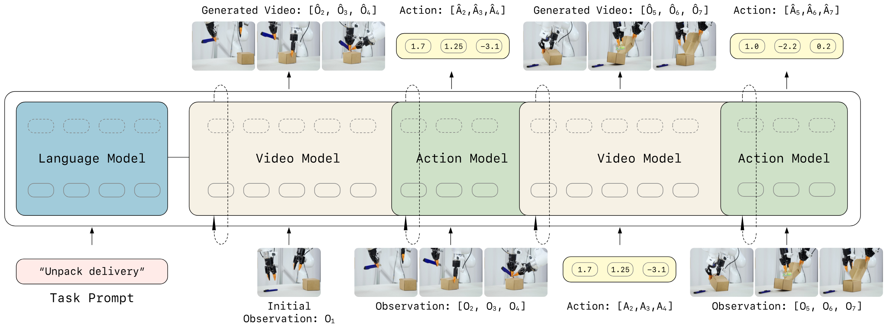
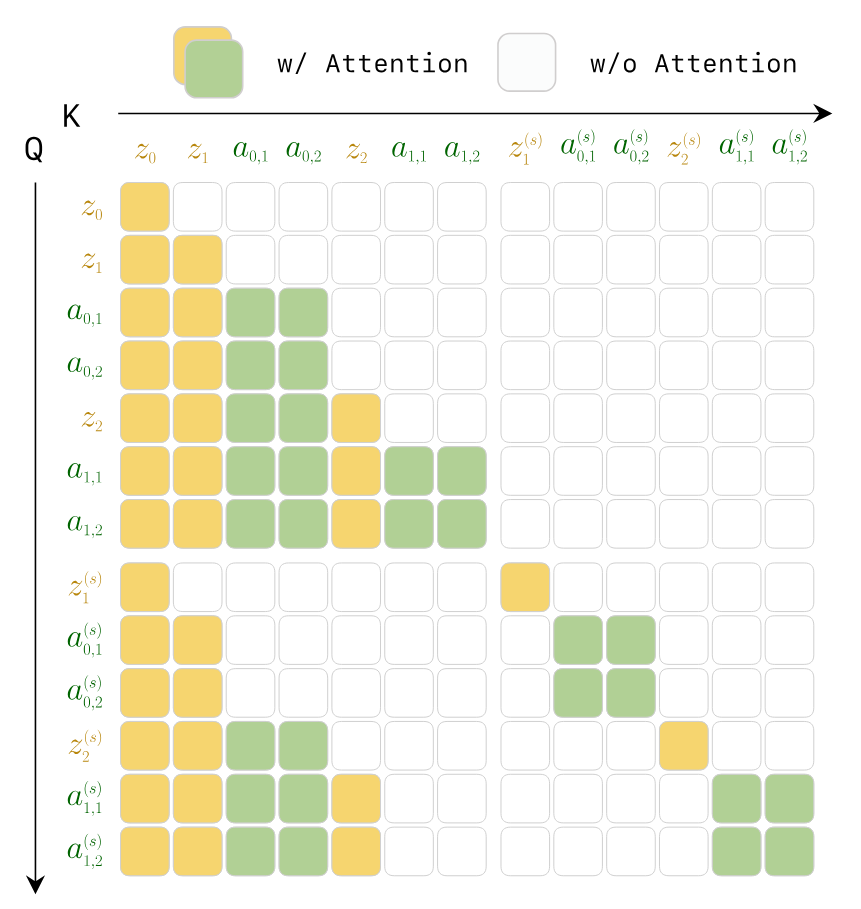
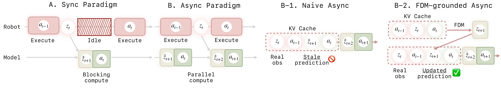
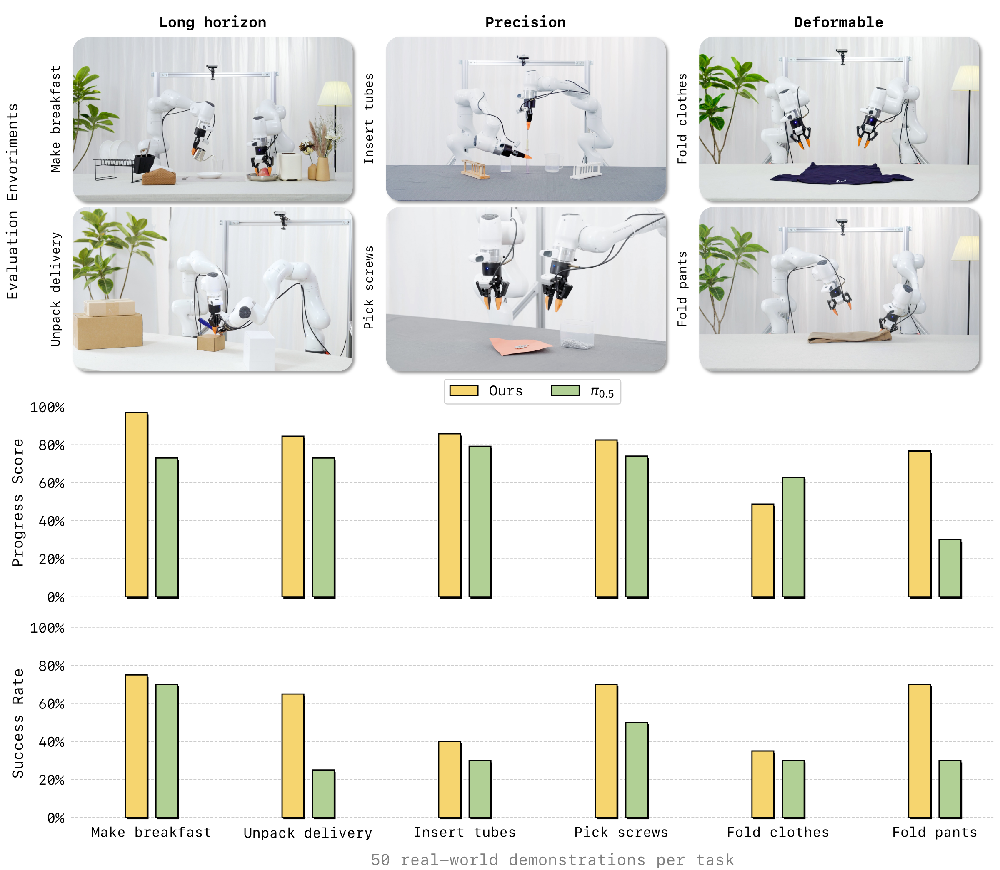
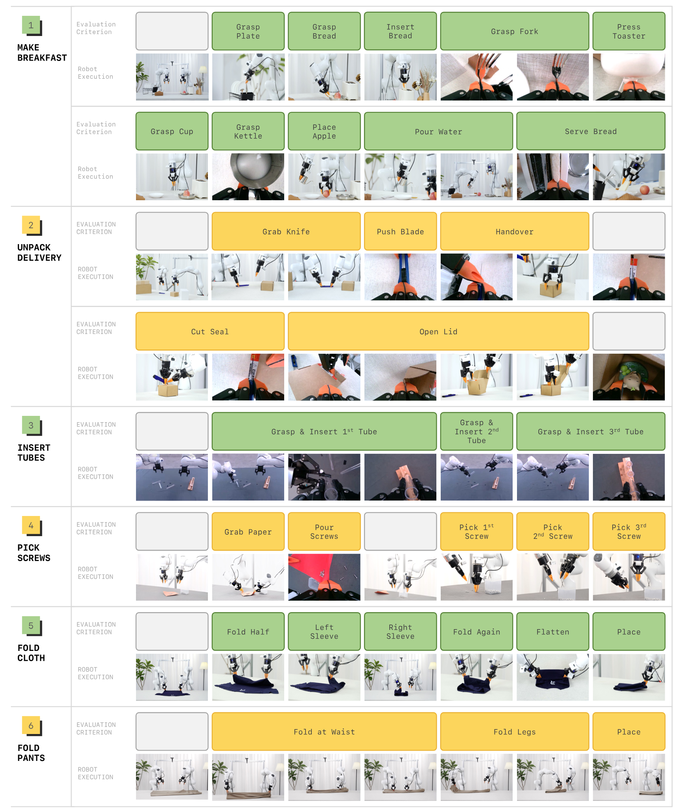
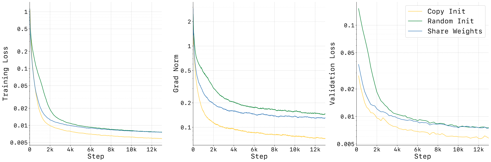
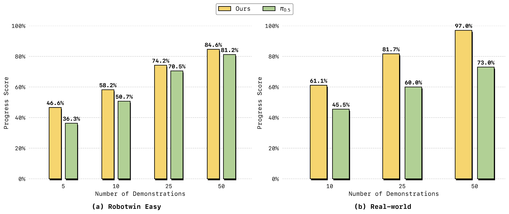
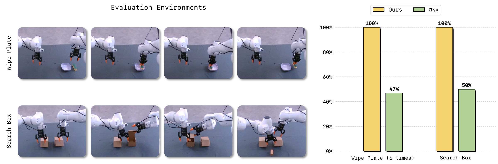
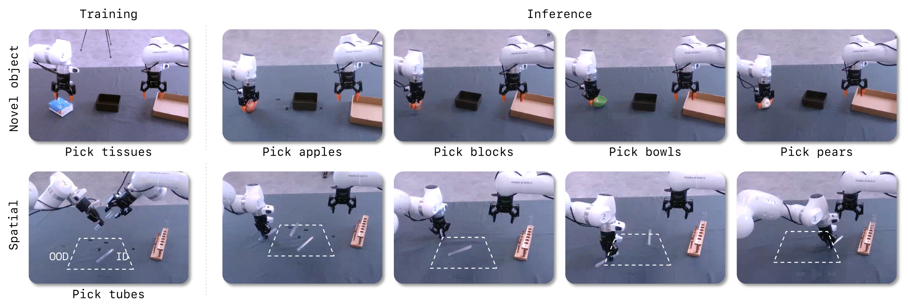

Causal World Modeling for Robot Control
1. Quick overview of the paper
| What should the paper solve? | Most existing VLAs output actions directly and reactively from the current image. Visual understanding, physical dynamics and motion control are squeezed into one supervision signal, which is prone to low sample efficiency and poor generalization. Existing world models often use open-loop or chunk-based bidirectional diffusion, making it difficult to continuously access real feedback. |
|---|---|
| The author's approach | Use Wan2.2-5B video diffusion backbone as video stream, add a narrower action stream, and interact through Mixture-of-Transformers; interleave video tokens and action tokens into a single causal sequence according to time, and use flow matching to train visual dynamics and inverse dynamics simultaneously. |
| most important results | The average SR of RoboTwin 2.0 50 tasks reaches 92.93% Easy / 91.55% Hard; the average SR of LIBERO reaches 98.5%; 6 real-world tasks are only adapted with 50 demos per task, the average progress score is about 79.2%, and the average success rate is about 59.2%, both of which are higher than $\pi_{0.5}$'s about 65.4% / 39.2%. |
| Things to note when reading | The main text of the paper states that both real-world indicators are overall better, but the item-by-item table in the appendix shows that the progress score of Fold Clothes is higher for $\pi_{0.5}$ than LingBot-VA; the following report is objectively presented according to the original values in the table. |
World Model Flow Matching Autoregressive Diffusion Mixture-of-Transformers Inverse Dynamics Asynchronous Control

core contribution
- Autoregressive Video-Action World Modeling. Architecturally unify video dynamic prediction and action inference into an interleaved sequence, while conceptually maintaining the division of labor between "world dynamics" and "action inverse dynamics".
- MoT + asymmetric dual flow.The video stream inherits Wan2.2-5B, and the action stream has the same number of layers but is narrower. It uses cross-modal attention fusion to avoid complete mixing of action and video feature spaces.
- Closed-loop deployment mechanism.Use KV cache to save history, and use real observation to continuously refresh the context; asynchronous reasoning parallelizes action execution and next prediction to reduce control delay.
- The experimental coverage is wide.At the same time, RoboTwin, LIBERO, real-world tasks, few samples, sequential memory and generalization experiments are given; the appendix gives details of 50 RoboTwin tasks and real-world trial-by-trial scoring.
2. Motivation and related work
2.1 Representation entanglement of existing VLA
The paper believes that current VLA often adopts a feedforward policy: mapping current visual observations and language instructions directly to action sequences. This method compresses visual semantics, physical dynamics and low-level motion control into the same representation and the same action supervision signal. The author calls it representation entanglement, and points out that this will lead to two problems: low sample efficiency, and limited generalization to new scenes, new objects, and long-term tasks.
2.2 Three types of limitations of existing world model / video policy
- Reactivity gap. Open-loop or chunk-based generation usually rolls out longer fragments at a time, making it difficult to absorb real feedback during execution.
- Limited long-term memory. Each chunk of chunk-wise generation is relatively independent, and cross-chunk drift is prone to occur in long horizons.
- Causality mismatch. Many diffusion video-action methods use bidirectional attention within a segment, and future tokens will affect the prediction of past tokens; this is inconsistent with the causal structure of "the current only depends on the past" in real physics.
2.3 Relationship with related work
| direction | Positioning in the paper | LingBot-VA Differences |
|---|---|---|
| Vision-Language-Action Policies | $\pi_0$, $\pi_{0.5}$, GR00T-N1, OpenVLA, etc. are pre-trained using VLM/VLA and fine-tuned through robot demonstrations. | Not only learn observation-to-action reactive mapping, but explicitly train video dynamics and inverse dynamics, and maintain causal history during execution. |
| World Models for Robotic Control | Three categories: latent-space, 3D point cloud, and 2D pixel/video; the paper focuses on video/world models that can predict future frames and conditional action generation during execution. | Use KV cache and causal mask to continuously access real observations, and avoid waiting for complete high-quality video generation through partial denoising. |
| Video-action generative policies | UVA, UWM, Motus, Gen2Act, Act2Goal, etc. demonstrate video-action joint or video sub-goal ideas. | Emphasis on causal autoregressive sequence and persistent memory rather than bidirectional chunk generation or offline video subgoals. |
3. Detailed explanation of method
3.1 From reactive policy to world-model-first policy
Ordinary VLA uses $\pi_\theta(\cdot \mid o_t)$ to predict actions directly. LingBot-VA splits the control into two stages: first predict the future visual state, and then reverse the action based on the current state and the predicted future state. This decomposition allows Stage 1 to learn physics priors using large-scale video data, while Stage 2 uses robotics data to map visual changes onto executable actions.

3.2 Preliminary knowledge of Flow Matching
The paper uses continuous latent diffusion / flow matching. Given a data sample $x_1$ and noise $\epsilon \sim \mathcal{N}(0, I)$, the model learns a continuous-time vector field that pushes the noise along the path to the data distribution.
Intuitive understanding: The model does not predict the final sample in one step, but learns which direction each noise state should move.
$$\frac{dx^{(s)}}{ds}=v_s(x^{(s)}), \quad x^{(0)}=\epsilon$$ $$\mathcal{L}_{\text{FM}}=\mathbb{E}_{s, \epsilon, x_1}\left[\|v_\theta(x^{(s)}, s)-\dot{x}^{(s)}\|^2\right]$$Commonly used linear interpolation $x^{(s)}=(1-s)\epsilon+s x_1$, so the true speed $\dot{x}^{(s)}=x_1-\epsilon$. During inference, integrate from the noise to $s=1$.
3.3 Autoregressive Video-Action World Modeling
The core idea is to put visual latent and action tokens into a causal sequence that unfolds in time. Each autoregressive step predicts a video chunk and decodes the corresponding action chunk at the same time; chunks can be generated internally in parallel, and causal dependency is maintained between chunks.
Visual dynamics prediction: The next video latent is determined by past vision and past actions.
$$z_{t+1: t+K} \sim p_\theta(\cdot \mid z_{\leq t}, a_{Action decoding: Given the predicted future visual state, the action to achieve the visual transfer is deduced.
$$a_{t: t+K-1} \sim g_\psi(\cdot \mid \hat{z}_{t+1: t+K}, z_{\leq t}, a_{3.4 Unified architecture: asymmetric dual-stream MoT
| module | Paper setting | design purpose |
|---|---|---|
| Video stream | Initialized from Wan2.2-5B, hidden dimension $d_v=3072$, 30-layer Transformer. | Inheriting visual dynamic priors in large-scale video generation models. |
| Action stream | The same 30 layers, but the width is $d_a=768$, which is 4 times smaller than the video stream; there are about 350M additional parameters, and the total model is about 5.3B. | The action distribution is lower dimensional than video and does not require the same capacity; action-specific feature space is retained. |
| MoT fusion | Video/action calculate QKV separately. The action token is first projected to the video dimension to participate in joint self-attention, and then projected back to the action dimension. | Allow cross-modal interaction while reducing the contamination of different modal representations. |
| Video sparsification | The video time is downsampled by $\tau=4$, and each video frame is associated with $\tau$ consecutive actions. | Reduce the number of video tokens while retaining high-frequency control of actions. |
| Action initialization | Initialize the action stream interpolated with pretrained video weights and scaled with $\alpha=\sqrt{d_v/d_a}$. | Stabilize early training and avoid the excessive gap between action token distribution and video token distribution from damaging joint attention. |
3.5 Teacher Forcing and causal attention mask
During training, the entire episode is treated as an interleaved video-action sequence. The model predicts the next token at each token position, but the context uses ground-truth history tokens, rather than the history generated by the model itself. The authors emphasize that this is reasonable in robots since real-world observations are also constantly received when deployed.

3.6 Noisy History Augmentation and partial denoising
Video token generation is an inference bottleneck because the number of visual tokens is large and each token requires multiple steps of denoising. The author's observation is that action prediction does not necessarily require completely denoised pixel-level vision, and partially denoised latent can already provide action-relevant structure. Therefore, the historical video latent is randomly added to the noise during training, forcing the action decoder to adapt to the noisy visual states.
The video token does not need to be fully integrated to $s=1$ during inference. The theory in the main text is that it can be integrated to $s=0.5$; in the experimental implementation, Euler solver is used in 3 steps and integrated to $s=0.6$, and the action token still uses 10 steps to be integrated to $s=1.0$.
3.7 KV Cache and asynchronous reasoning
Synchronous reasoning will allow the robot to wait for the model to generate future videos and actions; asynchronous reasoning will allow the robot to execute the current action chunk while the model predicts the next segment. The problem is that naive async will continue to generate based on stale predicted video, causing drift. LingBot-VA adds Forward Dynamics Model grounded step: use recent real observations and currently performed actions to reimagine the current results, and then predict subsequent vision and actions.

4. Mathematical forms and training objectives
4.1 Training loss
Visual dynamics loss: A supervised model predicts the flow velocity of the next visual latent given history, action, and language conditions.
$$\mathcal{L}_{\mathrm{dyn}} = \mathbb{E}_{t, s, z_{t+1}, \epsilon} \left[ \left\| v_\theta(z_{t+1}^{(s)}, s, \tilde{z}_{\leq t}, a_{Action inverse dynamics loss: Restore action flow from the current/next visual latent and historical actions.
$$\mathcal{L}_{\mathrm{inv}} = \mathbb{E}_{t, s, a_t, \epsilon} \left[ \left\| v_\psi(a_t^{(s)}, s, \tilde{z}_{\leq t+1}, a_{4.2 forward dynamics loss of asynchronous post-training
5. Experiments and results
5.1 Data and training settings
| Project | settings |
|---|---|
| Pre-training data | Aggregating Agibot, RoboMind, InternData-A1, OpenVLA subset of OXE, UMI Data, RoboCOIN, and internal collection demonstrations; a total of approximately 16K hours of robot operation data. |
| General action representation | The arms are unified into a 7-dimensional EEF pose for each arm, a maximum of 7-dimensional joint angles, and a 1-dimensional gripper; the arms have a total of $(7+7+1)\times2=30$ dimensions, and any missing dimensions are filled with zeros. |
| video encoding | Wan2.2 causal VAE, compression ratio $4\times16\times16$, patchify to further reduce the spatial dimension by half, multi-view splicing along the width, $N=192$ spatial tokens per frame. |
| pre-training | 1.4T tokens; AdamW, peak LR $1\times10^{-4}$, weight decay 0.01, cosine annealing + linear warmup, bf16, gradient clipping 2.0, text dropout 0.1, uniform SNR sampler. |
| post-training | Adaptation of a small amount of task data; the text states that 50 demos can be effectively deployed; it is recommended to train 3K steps with LR $1\times10^{-5}$, or 1K steps with LR $1\times10^{-4}$. The real world experiment office writes 500 steps, LR $1\times10^{-4}$, and sequence length 150, 000. |
| reasoning | video Euler solver 3 steps to $s=0.6$, action 10 steps to $s=1.0$; video CFG 5.0, action CFG 1.0; deployment chunk size $K=4$. |
5.2 Real world deployment
The author evaluates 6 tasks on a real dual-arm platform, organized into three categories: long-horizon, precision, and deformable. Each task only uses 50 real demonstrations for training/adaptation; the appendix explains that each method has 20 trials per task, and the two methods are alternately tested to reduce sequence bias. Progress Score is the average step score divided by the maximum number of steps, and Success Rate is the proportion of successful trials in all steps.

| Task | Category | LingBot-VA PS | $\pi_{0.5}$ PS | LingBot-VA SR | $\pi_{0.5}$ SR | Remarks |
|---|---|---|---|---|---|---|
| Make Breakfast | Long-horizon | 97.0 | 73.0 | 75.0 | 70.0 | 10 steps; LingBot-VA mainly fails at pour, serve or intermediate placement. |
| Pick Screws | Precision | 82.5 | 74.0 | 70.0 | 50.0 | 5 steps; LingBot-VA is more stable overall in inverting the screws and inserting them one by one. |
| Insert Tubes | Precision | 85.8 | 79.2 | 40.0 | 30.0 | 3 grasp + 3 insert; grasp is close to full score, insert is the main bottleneck. |
| Unpack Delivery | Long-horizon | 84.5 | 73.0 | 65.0 | 25.0 | Cutting the seal and opening the lid are the main points of failure with the $\pi_{0.5}$. |
| Fold Clothes | Deformable | 48.8 | 62.9 | 35.0 | 30.0 | The complete success rate of LingBot-VA is slightly higher, but the progress score is lower than $\pi_{0.5}$. |
| Fold Pants | Deformable | 76.7 | 30.0 | 70.0 | 30.0 | LingBot-VA significantly improved on the three-step folding task. |
| average | - | 79.2 | 65.4 | 59.2 | 39.2 | Simple average by 6 tasks. |

5.3 RoboTwin 2.0 simulation
RoboTwin 2.0 is a two-arm manipulation benchmark. The paper uses multi-task training: 50 tasks, each task has 50 demonstrations of clean scenes, plus 500 demonstrations of heavily randomized scenes; the video is reduced from 50 Hz to 12.5 Hz, and the action frequency is maintained at 50 Hz; training is 50K steps, LR $1\times10^{-5}$.
| Metric | X-VLA Easy | X-VLA Hard | $\pi_0$ Easy | $\pi_0$ Hard | $\pi_{0.5}$ Easy | $\pi_{0.5}$ Hard | Motus Easy | Motus Hard | Ours Easy | Ours Hard |
|---|---|---|---|---|---|---|---|---|---|---|
| Horizon = 1 | 81.6 | 82.5 | 66.5 | 61.6 | 85.1 | 80.2 | 91.0 | 90.6 | 94.18 | 93.56 |
| Horizon = 2 | 59.3 | 55.9 | 66.1 | 54.7 | 79.3 | 73.0 | 85.2 | 80.9 | 90.35 | 86.95 |
| Horizon = 3 | 61.2 | 66.0 | 61.6 | 50.2 | 78.6 | 67.4 | 85.0 | 84.2 | 93.22 | 93.28 |
| Average 50 Tasks | 72.9 | 72.8 | 65.9 | 58.4 | 82.7 | 76.8 | 88.7 | 87.0 | 92.93 | 91.55 |
The appendix provides 50 task-by-task results. Looking at tasks, LingBot-VA does not rank first in every sub-task, such as Hanging Mug, Turn Switch, etc. There is still obvious room; but the average value exceeds the second place in Easy/Hard and each horizon group.
5.4 LIBERO simulation
LIBERO uses four suites: Spatial, Object, Goal, and Long. Each suite has 10 tasks and each task has 50 demos. Paper filtering failed demonstrations, finetune 4K steps, LR $1\times10^{-5}$, sequence length $10^5$. Each suite reports 3 random seeds, each with 500 trials, for a total of 1500 trials.
| Method | Spatial | Object | Goal | Long | Avg |
|---|---|---|---|---|---|
| OpenVLA | 84.7 | 88.4 | 79.2 | 53.7 | 76.5 |
| $\pi_0$ | 96.8 | 98.8 | 95.8 | 85.2 | 94.1 |
| OpenVLA-OFT | 97.6 | 98.4 | 97.9 | 94.5 | 97.1 |
| X-VLA | 98.2 | 98.6 | 97.8 | 97.6 | 98.1 |
| LingBot-VA | 98.5 ± 0.3 | 99.6 ± 0.3 | 97.2 ± 0.2 | 98.5 ± 0.5 | 98.5 |
5.5 Ablation
| Ablation | Setting | Easy all | Horizon 1 | Horizon 2 | Horizon 3 | explain |
|---|---|---|---|---|---|---|
| Baseline | LingBot-VA | 92.9 | 94.2 | 90.4 | 93.2 | Complete method. |
| Deployment | FDM-grounded Async | 90.4 | 92.5 | 87.7 | 85.6 | With FDM grounding added asynchronously, the speed increases but the SR decreases slightly. |
| Deployment | Naive Async | 74.3 | 83.3 | 70.3 | 32.9 | Without real feedback calibration, the long horizon obviously collapses. |
| Pretrain | WAN init | 80.6 | 84.9 | 76.3 | 67.6 | Only Wan2.2 is used for initialization and fine-tuning, and video-action pre-training is missing. |
The text also points out that the task completion speed of asynchronous methods is about 2 times that of synchronous methods; FDM-grounded async in the table is close to baseline, while naive async especially drops from 93.2 to 32.9 at Horizon=3, which directly supports the design motivation of "stale prediction will cause drift".

5.6 Analysis experiments: few samples, memory, generalization



6. Repeat audit
6.1 Public resources
Code and models are publicly available.arXiv and source code metadata point to GitHub repository and Project page. As of the time of this report, the GitHub README shows that the base checkpoint, RoboTwin post-train checkpoint, LIBERO-Long post-train checkpoint, as well as the RoboTwin/LIBERO evaluation script and post-training data description have been exposed.
6.2 Environment and operating information
| Project | public information |
|---|---|
| Basic environment | GitHub README states Python 3.10.16, PyTorch 2.9.0, CUDA 12.6; dependencies include diffusers 0.36.0, transformers 4.55.2, flash-attn, etc. |
| attention mode | The README emphasizes that `attn_mode="flex"` needs to be set for training, and `"torch"` or `"flashattn"` must be set for inference/evaluation, otherwise eval will report an error. |
| RoboTwin Reasoning | Provide server-client structure; single-GPU RoboTwin evaluation offload mode requires approximately 24GB VRAM; multi-GPU client padding 50 tasks to 56 and divided into 7 groups to adapt to 8-GPU settings. |
| Image-to-video-action reasoning | README gives `NGPU=1 CONFIG_NAME='robotwin_i2av' bash script/run_launch_va_server_sync.sh`, offload mode requires about 18GB VRAM. |
| Post-training | Use LeRobot dataset format; training examples are `NGPU=8 CONFIG_NAME='robotwin_train' bash script/run_va_posttrain.sh` and `CONFIG_NAME='libero_train'`. |
6.3 Details that must be grasped for reproducibility
- The unified format of actions is a 30-dimensional double-arm representation; when changing robots or customizing data, they must be mapped to left/right EEF, joint, and gripper, and missing dimensions must be filled with zeros.
- Data preparation is not just about videos and actions, but also adding `action_config` to LeRobot metadata and specifying `start_frame`, `end_frame` and `action_text`.
- You need to use Wan2.2 VAE to extract video latent and put it in the `latents/` Contents. The naming must be consistent with the `episode_{index}_{start_frame}_{end_frame}.pth` convention.
- The `attn_mode` settings for inference and training are different, which is an error-prone point specially noted in the README.
- The text of the paper does not disclose the number of GPUs used for pre-training, the total training time, and the batch size; the README recommends using a larger global batch size for post-training, such as 32 or 64, and using gradient accumulation when insufficient.
6.4 Appendix Integration Instructions
The appendix is not negligible material: the complete list of RoboTwin 50 tasks, trial-by-trial success/step scores of 6 real-world tasks, and PS/SR calculation definitions are all in the appendix. The report has integrated these appendices information into 5.2 and 5.3, rather than treating the appendices as independent tails.
7. Analysis, Limitations and Boundaries
7.1 The most valuable part of this paper
The most valuable part of the paper is that it turns the question "whether the video world model can become the basis of robot control" into a deployable causal autoregressive system, instead of just showing offline video generation. Specific evidence includes: RoboTwin's long horizon grouping improvement, 100% vs 47/50% memory task, and ablation where naive async is greatly degraded at Horizon=3 but FDM-grounded async is significantly restored.
7.2 Why the results hold up
The support chain of the results is relatively complete: the main table shows the average indicators of RoboTwin and LIBERO; the real-world tasks use 20 trials, step-by-step scoring and alternating evaluation protocols; ablation separately separates async grounding, video-action pretraining, and action stream initialization; the analysis experiments are supplemented from the three perspectives of few samples, sequential memory, and generalization. In other words, the paper does not rely on a total score to support all claims.
7.3 Limitations and future directions described by the author
- The computational overhead is still high.Conclusion clearly mentioned that more efficient video compression solutions should be developed in the future to reduce computational overhead.
- The perception mode is still mainly visual.The author proposes that multi-modal sensing such as tactile, force, and audio can be added in the future to improve the robustness of complex contact tasks.
- Partial denoising is an efficiency trade-off.The paper demonstrates that it can be used for action prediction, but this also means that full high-fidelity video reconstruction is not pursued in deployment.
7.4 Qualifications in the report
- On the progress score of real-world Fold Clothes, the appendix table shows that LingBot-VA is 48.8%, which is lower than $\pi_{0.5}$'s 62.9%; therefore, the statement "all indicators are better for all tasks" cannot be established item by item.
- The pre-training data includes internally collected demonstrations. Even if external repeaters have code and checkpoints, they may not be able to reproduce the 1.4T-token pre-training from scratch.
- The real-world evaluation has 20 trials per task and can show trends, but the statistical confidence interval for complex robot tasks is still limited; the paper does not give random seeds or error bars for real-world tasks.
- RoboTwin/LIBERO has strong benchmark evidence, but there is still a domain gap between it and an open real home or factory environment.